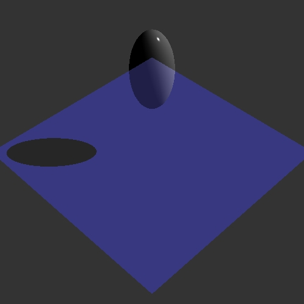
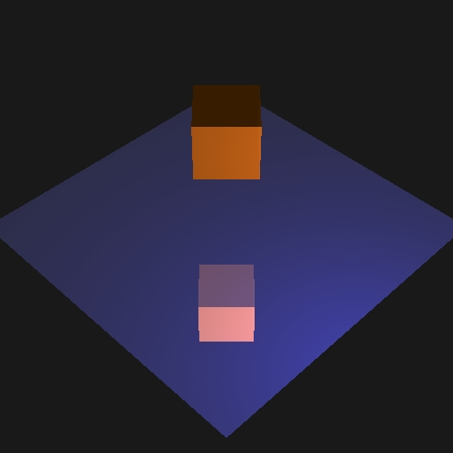

Graphics Assignment #2
CS 4810: Graphics
Assignment #2: Ray Tracing
Tom Crossland (tcc4dr)
Compiled with g++ / Mac OS X 10.6.8
Ray Generation and Group Intersection (3)
The camera of the scene has values for its location in space. It also has an orthonormal set of vectors specifying the orientation of the camera. The towards vector points to the center of the image plane. The resolution of the image plane is specified by the user. The vertical angle of view of the camera is specified as well. The horizontal view angle can be calculated with the known aspect ratio. To cast a ray through a pixel in 3D, I broke it down a smaller problem: casting a ray in 2D twice. First, I cast a ray for the pixel as if it were located on the center of the vertical axis of the image plane. Second, I cast a ray for the pixel as if it were located on the center of the horizontal axis of the image plane. To cast a ray through the i-th pixel in 2D, you find the top and bottom points of the image plane. Let d be any number. The bottom point(P1) will be the center of the camera plus the unit towards vector scaled by d minus the up unit vector times d times the tan of half the viewing angle. The top point (P2) will be the center of the camera plus the unit towards vector scaled by d plus the up unit vector times d times the tan of half the viewing angle. Next, you form a parameterized function for the line segment from the top to bottom points P1 + t*(P2-P1). Given the resolution and pixel value you want to pierce through, you can find the point on the image plane. If you want to find the i-th pixel, t = (i+.5)/resolution. The .5 is necessary to get the center of the pixel. You do this process for the i and j dimensions of the image plane. Once you have the points of intersection for (i,mid) and (mid,j) and the middle point of the image plane, you can calculate the point of intersection for (i,j). The ray that will pierce pixel i,j has the normalized direction of that Point minus the camera position and position of the camera position.
Group intersection was done in the following manner. Loop through all the shapes in the group and get the t values of the ray for intersections. If the t value is < 0, there was no intersection. The min t value corresponds to the intersection that happened first along the ray. Therefore, the min t value is found and returned for an intersection and -1 is returned if there are no intersections.
The following images are of a final scene (test.ray) at different resolutions. All parts (reflection, refraction, partial shadows, direct illumination) were left uncommented. These images will help illustrate how the resolution of the image plane affects how rays are casted. I used these commands to compute these images.
./Assignment2 --in ./tcc4dr_HTML/Input/test.ray --out ./tcc4dr_HTML/Output/test_500x500.jpg --width 500 --height 500 --rLimit 5 --cLimit 0.0001
./Assignment2 --in ./tcc4dr_HTML/Input/test.ray --out ./tcc4dr_HTML/Output/test_600x500.jpg --width 600 --height 500 --rLimit 5 --cLimit 0.0001
./Assignment2 --in ./tcc4dr_HTML/Input/test.ray --out ./tcc4dr_HTML/Output/test_800x800.jpg --width 800 --height 800 --rLimit 5 --cLimit 0.0001
./Assignment2 --in ./tcc4dr_HTML/Input/test.ray --out ./tcc4dr_HTML/Output/test_300x400.jpg --width 300 --height 400 --rLimit 5 --cLimit 0.0001
./Assignment2 --in ./tcc4dr_HTML/Input/test_wide.ray --out ./tcc4dr_HTML/Output/test_wide.jpg --width 500 --height 500 --rLimit 5 --cLimit 0.0001
./Assignment2 --in ./tcc4dr_HTML/Input/test_narrow.ray --out ./tcc4dr_HTML/Output/test_narrow.jpg --width 500 --height 500 --rLimit 5 --cLimit 0.0001
Figure 0.1 test.ray with a 500x500 image plane

|
Figure 0.2 test.ray with a 600x500 image plane
|
|
Figure 0.3 test.ray with a 800x800 image plane
|
|
Figure 0.4 test.ray with a 300x400 image plane
|
|
Figure 0.5 test.ray with a vertical angle of view of .7 radians
|
|
Figure 0.6 test.ray with a vertical angle of view of .4 radians
|
|
The following are images of a final scene (test.ray) at different resolutions. All parts of the code are uncommented. Notice how when the resolution is scaled, the angle of view does not change as in Figures 0.1 and 0.3. Rays are thus casted similarly and cover the same area of the image plane. The image plane size does not change, just its resolution. When you change the aspect ratio, the horizontal view angle changes, showing more or less of the horizontal aspect of the scene as in Figures 0.2 and 0.4. Changing the vertical angle of view is apparent in Figures 0.5 and 0.6. When the angle of view is larger, the rays have a larger angle bound to get to the image plane. This produces an image more zoomed out and showing more of the scene than a camera with a smaller field of view. This is present in comparing Figure 0.5 with Figure 0.1. When the angle of view is smaller, the rays have a smaller angle bound to get to the image plane. This produces an image more zoomed in and showing less of the scene than a camera with a larger field of view. This is present in comparing Figure 0.6 with Figure 0.1.
Sphere Intersection (2)
Sphere intersection was performed with the geometric method. A line segment from the ray origin to the center of the sphere, L, is calculated. The projected length of L onto the ray direction unit vector is found, t_ca. Using the Pythagorian theorem, the length of the line from the center of the sphere perpendicular to the ray direction vector is found (d). If d^2 > r^2, than the point lies outside of the sphere. Using the Pythagorian theorem, the length from the point of intersection of d and the ray direction vector to one of the two intersections of the sphere is found. This length will be called t_hc. Therefore, t = t_ca -/+ t_hc. The first intersection corresponds with the min of these two possibilities. The normal of the intersection is just the unit vector going from the center of the sphere to the point of intersection.
I thought it would be useful later to determine if an intersection happened on the inside or outside of the sphere. To do this, I tested where or not the distance from the ray origin to the center of the sphere was less than the radius. If it was, then the ray started in the sphere and would intersect out of the sphere. I stored this information in the first character of the foo string of the material returned in the intersection.
The following are test images for sphere intersection. White indicates a pixel whose ray intersected a sphere. I commented out my triangle intersect function and made it return -1. If an intersection happened in get color, I commented out all illumination and return returned a white pixel. The following images were generated using these commands:
./Assignment2 --in ./tcc4dr_HTML/Input/test.ray --out ./tcc4dr_HTML/Output/test_sphere_500x500.jpg --width 500 --height 500 --rLimit 5 --cLimit 0.0001
./Assignment2 --in ./tcc4dr_HTML/Input/test.ray --out ./tcc4dr_HTML/Output/test_sphere_600x500.jpg --width 600 --height 500 --rLimit 5 --cLimit 0.0001
./Assignment2 --in ./tcc4dr_HTML/Input/test.ray --out ./tcc4dr_HTML/Output/test_sphere_500x600.jpg --width 500 --height 600 --rLimit 5 --cLimit 0.0001
./Assignment2 --in ./tcc4dr_HTML/Input/multi-lights.ray --out ./tcc4dr_HTML/Output/multi-lights_sphere.jpg --width 500 --height 500 --rLimit 5 --cLimit 0.0001
Figure 1.1 Sphere intersection indicated by white pixels on test.ray with a 500x500 image plane
|
|
Figure 1.2 Sphere intersection indicated by white pixels on test.ray with a 600x500 image plane
|
|
Figure 1.2 Sphere intersection indicated by white pixels on test.ray with a 500x600 image plane
|
|
The above images, as we will later see, correctly identify the location of spheres in the scene. The sphere intersect works for translations of a sphere (Figure 1.4), multiple spheres in the same scene (Figure 1.4) and varied resolution sizes (Figures 1.1-1.3).
Triangle Intersection (2)
Triangle intersection was performed in the following manner. Each triangle lies on a plane. This plane has a normal. The parameteric equation for a ray is P = P0 + tV. The implicit equation for a plane is P*N + d = 0. Therefore, you can set these equations equal to one another and solve for t to get the point of intersection on the plane. For each side of the triangle, see if the point lies on the correct side of the line bounding the triangle. If this is true for all three sides, then the point is in the triangle. Next the barycenteric coordinates of the triangle are calculated. Every point in a triangle can be represented by the formula a*V1 + b*V2 + c*V3 in which a, b, c are positive weights that sum to zero and V1, V2, and V3 are the vertices of the triangle. These weights are correspondent to their relative areas of the triangle formed between the other two vertices and the point of intersection. Using cross product, we can calculate these areas, normalize them, and thus get our barycenter coordinates. The triangle has two potential directions for the normal, both perpendicular to the triangle plane. The normal facing the ray origin is chosen. The normal of the intersection is calculated by the weighted sum of normals at the vertices using the barycenter centric coordinates as weights. Since triangles themselves do not have volume, I assumed all rays intersecting them would be outside and marked them as such. Determining whether or not a ray was enclosed by multiple triangles was deemed too computationally expensive. The following are test images for triangle and sphere intersection. White indicates a pixel whose ray intersected triangles and spheres. I uncommented out my triangle intersect function and made it return the normal t value. If an intersection happened in get color, I commented out all illumination and return returned a white/black pixel depending on the image (black for dog.ray since its background was white). The following images were generated using these commands:
./Assignment2 --in ./tcc4dr_HTML/Input/test.ray --out ./tcc4dr_HTML/Output/test_triangle.jpg --width 500 --height 500 --rLimit 5 --cLimit 0.0001
./Assignment2 --in ./tcc4dr_HTML/Input/multi-lights.ray --out ./tcc4dr_HTML/Output/multi-lights_triangle.jpg --width 500 --height 500 --rLimit 5 --cLimit 0.0001
./Assignment2 --in ./tcc4dr_HTML/Input/dog.ray --out ./tcc4dr_HTML/Output/dog_triangle.jpg --width 500 --height 500 --rLimit 5 --cLimit 0.0001
Figure 2.1 Triangle intersection indicated by white pixels on test.ray
|
|
Figure 2.3 Triangle intersection indicated by black pixels on dog.ray
|
|
The above images, as we will later see, correctly identify the location of spheres and triangles in the scene. The sphere intersect works for translations of triangles (Figure 2.3) and multiple triangles in the same scene (Figure 2.2 and 2.3).
Ambient and Emissive Lighting (1)
The ambient lighting represents reflection of all indirect illumination. The intensity of the ambient light is equal to the ambient light specified in the scene times the material's ambient coefficient. Emission represents light emanating directly from a surface that cannot be described by point, spot, or directional lights. The intensity is equal to the emission intensity for the scene. The following images show the correct computation of the combination of emissive and ambient lighting for separate materials. I uncommented the portion of code to return the ambient and emissive illumination of intersected materials. The following images were made with these commands:
./Assignment2 --in ./tcc4dr_HTML/Input/test.ray --out ./tcc4dr_HTML/Output/test_emissive_ambient.jpg --width 500 --height 500 --rLimit 5 --cLimit 0.0001
./Assignment2 --in ./tcc4dr_HTML/Input/multi-lights.ray --out ./tcc4dr_HTML/Output/multi-lights_emissive_ambient.jpg --width 500 --height 500 --rLimit 5 --cLimit 0.0001
./Assignment2 --in ./tcc4dr_HTML/Input/dog.ray --out ./tcc4dr_HTML/Output/dog_emissive_ambient.jpg --width 500 --height 500 --rLimit 5 --cLimit 0.0001
./Assignment2 --in ./tcc4dr_HTML/Input/test_box_no-ae.ray --out ./tcc4dr_HTML/Output/test_box_no-ae.jpg --width 500 --height 500 --rLimit 5 --cLimit 0.0001
./Assignment2 --in ./tcc4dr_HTML/Input/test_box_ae.ray --out ./tcc4dr_HTML/Output/test_box_ae.jpg --width 500 --height 500 --rLimit 5 --cLimit 0.0001
Figure 3.1 Ambient and emissive lighting on test.ray
|
|
Figure 3.3 Ambient and emissive lighting on dog.ray
|
|
The above images show the correct computation of the combination of emissive and ambient lighting for separate materials. In Figures 3.1 and 3.2, the ambient components are different for the different shapes and materials. The lighting is scale accordingly. Because the dog in Figure 3.3 is made up of the same material, it has the same ambient and emissive lighting throughout. Ambient and emissive lighting try to simulate indirect illumination. In the scene in Figures 3.4 and 3.5, the sides of the square not facing the light source are not illuminated by the light source. Without ambient or emissive lighting as in Figure 3.4, these sides are black and reflect no light. They are not seen in the reflection on the plane. However, in order to simulate a more realistic effect, ambient and emissive lighting can be added to simulate indirect illumination. This makes these planes not in the path of a light source still able to be somewhat illuminated. In Figure, ambient and emissive lighting are added and the results are apparent.
Diffuse Lighting (2)
Diffuse lighting represents the lighting on a surface assuming that the light reflects equally in all directions. The amount of light reflected depends on the angle of incident light. The Phong reflectance model assumes that the amount of light reflected behavors similarly to the cosine of the vector from the surface intersection to the light and the surface normal. This is because the density of light is greatest when the vector to the light and surface normal are in the same direction and it falls off when you move away from the surface normal. The diffuse intensity is thus equal to the dot product of the vector towards the light with the surface normal times the Intensity of the light. This value is scaled by the material's diffuse constant, some parameter specified by the user to attempt to model a material. Note that the lights and surface properties are parameterized into RGB components. Therefore, the amound of red light doesn't necessarily reflect the same amount as blue light. Therefore, each lighting calculation must be computed individually. Diffuse lighting is done for each light source and then summed together. The following images show the diffuse lighting of these scenes. I uncommented the portion of code to return the diffuse illumination of intersected materials. The following images were made with these commands:
./Assignment2 --in ./tcc4dr_HTML/Input/test.ray --out ./tcc4dr_HTML/Output/test_diffuse.jpg --width 500 --height 500 --rLimit 5 --cLimit 0.0001
./Assignment2 --in ./tcc4dr_HTML/Input/multi-lights.ray --out ./tcc4dr_HTML/Output/multi-lights_diffuse.jpg --width 500 --height 500 --rLimit 5 --cLimit 0.0001
./Assignment2 --in ./tcc4dr_HTML/Input/dog.ray --out ./tcc4dr_HTML/Output/dog_diffuse.jpg --width 500 --height 500 --rLimit 5 --cLimit 0.0001
Figure 4.1 Addition of diffuse lighting to test.ray
|
|
Figure 4.3 Addition of diffuse lighting to dog.ray
|
|
One can see the different levels of diffuse lights in the scene. All the materials look extremely matte or chalky. The different colors of diffusion as specified by the materials can be seen, especially in Figure 4.1. The multi-light scene (Figure 4.2) has three lights: a directional light parallel in the direction of (-1,-1,0) that is red, a white point light above the smaller sphere, and a cyan spotlight in front of and off to the left of the large sphere, pointing parallel to the x axis (straight right). One can observe how the colors of the lights affect the diffuse lighting component. The large sphere originally has a diffuse of yellow. However, the addition of the green spotlight and the red directional light make the sphere appear to be green and red-orange, respectively. The same principles can be seen with the smaller sphere. The dog in Figure 4.3 looks really matte and is blue due to the material's diffusion coefficient (.1,.1,.6).
Specular Lighting (2)
Specular reflection is strongest near the mirror angle of the vector going from the surface to the light. Therefore, a similar approach to diffuse model will be taken. The cosine between the view vector and the light vector reflected over the surface normal is proportional to the amound of specular reflection. The specular reflection will equal the dot project of the vector from the surface to the viewer and the reflected vector to the light raised to some power. This power represents the specular fall off. This cosine raised to a power is multiplied by the material's specular value and the original light intensity. Note that the lights and surface properties are parameterized into RGB components. Therefore, the amound of red light doesn't necessarily reflect the same amount as blue light. Therefore, each lighting calculation must be computed individually. Specular lighting is done for each light source and then summed together. The following images show the specular lighting of these scenes. I uncommented the portion of code to return the specular illumination of intersected materials. The following images were made with these commands:
./Assignment2 --in ./tcc4dr_HTML/Input/test.ray --out ./tcc4dr_HTML/Output/test_specular.jpg --width 500 --height 500 --rLimit 5 --cLimit 0.0001
./Assignment2 --in ./tcc4dr_HTML/Input/multi-lights.ray --out ./tcc4dr_HTML/Output/multi-lights_specular.jpg --width 500 --height 500 --rLimit 5 --cLimit 0.0001
./Assignment2 --in ./tcc4dr_HTML/Input/dog.ray --out ./tcc4dr_HTML/Output/dog_specular.jpg --width 500 --height 500 --rLimit 5 --cLimit 0.0001
./Assignment2 --in ./tcc4dr_HTML/Input/dog.ray --out ./tcc4dr_HTML/Output/dog_only_specular.jpg --width 500 --height 500 --rLimit 5 --cLimit 0.0001
./Assignment2 --in ./tcc4dr_HTML/Input/test_specular_128.ray --out ./tcc4dr_HTML/Output/test_specular_128.jpg --width 500 --height 500 --rLimit 5 --cLimit 0.0001
./Assignment2 --in ./tcc4dr_HTML/Input/test_specular_100.ray --out ./tcc4dr_HTML/Output/test_specular_100.jpg --width 500 --height 500 --rLimit 5 --cLimit 0.0001
./Assignment2 --in ./tcc4dr_HTML/Input/test_specular_60.ray --out ./tcc4dr_HTML/Output/test_specular_60.jpg --width 500 --height 500 --rLimit 5 --cLimit 0.0001
Figure 5.1 Addition of specular lighting to test.ray
|
|
Figure 5.3 Addition of specular lighting to dog.ray
|
|
Figure 5.4 Only specular lighting to dog.ray
|
|
One can see that the specular highlights occur in locations in which the angle between in the vector from the surface intersection to the viewer and the vector from the intersection to the light reflected over the surface normal is zero. The specular coefficients of the materials are also present. Notice in Figure 5.2. The large sphere is more reflective than the small sphere. Therefore, the specular highlights for the former are more prevalent. One can observe just the specular contribution to the scene by comparing Figures 5.3 and 5.4. The properties of the specular fall off were also tested. When the fall off is 128, the highlight is sharp and not spread out, as evident in Figure 5.5. As the fall off decreases, the specular highlight regions grows as evident in Figures 5.6 and 5.7 for when the fall off is 100 and 60 respectively. Also note how the specular highlights are very saturated and white. I performed bound clipping to make sure that all calculated color values fell in the inclusive range of [0,1]. This prevents any under or overflow of the color information.
Shadows (2)
Shadows are calculated in the following manner. For each point of intersection, construct a ray from the point to the light source. If the ray intersects anything along the way, that light source is blocked. The light produced from that light is no longer contributed. Do this for each light source. The following images were computed, creating binary shadows. I uncommented my calls in the get color function to produce hard shadows. The following images were created using these commands:
./Assignment2 --in ./tcc4dr_HTML/Input/test.ray --out ./tcc4dr_HTML/Output/test_shadows.jpg --width 500 --height 500 --rLimit 5 --cLimit 0.0001
./Assignment2 --in ./tcc4dr_HTML/Input/test_point.ray --out ./tcc4dr_HTML/Output/test_point_shadows.jpg --width 500 --height 500 --rLimit 5 --cLimit 0.0001
./Assignment2 --in ./tcc4dr_HTML/Input/test_spot_atten.ray --out ./tcc4dr_HTML/Output/test_spot_atten_shadows.jpg --width 500 --height 500 --rLimit 5 --cLimit 0.0001
Figure 6.1 Addition of shadows to test.ray
|
|
Figure 6.2 Addition of shadows to a point light scene (test_point.ray )

|
As you can see, shadows are present in the rendered images. The directional light in Figure 6.1, is going from right to left, pointing down. This casts a short shadow to the left of the sphere. Figure 6.2 shows a point light source off to the right of the image with no attentuation. A long shadow is created to the left. All of the darkened pixels in the shadow try to cast a ray to the light source. Since the light source isn't above the ellipsoid, it will always be blocked the further you go out. The further you go out, the wider the shadow becomes because the ray to the light will still be blocked by the ellipsoid. This is similar to the shadow created by the spot light source.
Color from Lighting (1)
The following are images combining the Phong reflectance model for direct illumination and shadows. I will use these images to discuss the differences in illumination for the three possible light sources: point, directional, and spot lights. Note that all Figures besides Figure 7.7 were rendered without reflection, partial shadows, or refraction. Those sections were commented out. The following images were computed using these commands:
./Assignment2 --in ./tcc4dr_HTML/Input/test_spot.ray --out ./tcc4dr_HTML/Output/test_spot.jpg --width 500 --height 500 --rLimit 5 --cLimit 0.0001
./Assignment2 --in ./tcc4dr_HTML/Input/test_spot_atten.ray --out ./tcc4dr_HTML/Output/test_spot_atten.jpg --width 500 --height 500 --rLimit 5 --cLimit 0.0001
./Assignment2 --in ./tcc4dr_HTML/Input/test_spot_.3.ray --out ./tcc4dr_HTML/Output/test_spot_.3.jpg --width 500 --height 500 --rLimit 5 --cLimit 0.0001
./Assignment2 --in ./tcc4dr_HTML/Input/test_spot_30.ray --out ./tcc4dr_HTML/Output/test_spot_30.jpg --width 500 --height 500 --rLimit 5 --cLimit 0.0001
./Assignment2 --in ./tcc4dr_HTML/Input/test_point.ray --out ./tcc4dr_HTML/Output/test_point.jpg --width 500 --height 500 --rLimit 5 --cLimit 0.0001
./Assignment2 --in ./tcc4dr_HTML/Input/test_point_atten.ray --out ./tcc4dr_HTML/Output/test_point_atten.jpg --width 500 --height 500 --rLimit 5 --cLimit 0.0001
./Assignment2 --in ./tcc4dr_HTML/Input/test_dir2.ray --out ./tcc4dr_HTML/Output/test_dir2.jpg --width 500 --height 500 --rLimit 5 --cLimit 0.0001
Figure 7.1 Direct illumination and shadows for a point light without attentuation. (test_point.ray)
|
|
Figure 7.2 Direct illumination and shadows for a point light with attentuation (1 1 0). (test_point_atten.ray)
|
|
Figure 7.3 Direct illumination and shadows for a spot light. (test_spot.ray)
|
|
Figure 7.4 Direct illumination and shadows for a spot light with smaller angle of lighting (.3 radians). (test_spot_.3.ray)
|
|
Figure 7.5 Direct illumination and shadows for a spot light with smaller drop off (30). (test_spot_30.ray)
|
|
Figure 7.6 Direct illumination and shadows for a spot light with attenuation (.1,.2,.1) and reflection/refraction. (test_spot_atten.ray )

|
Figure 7.7 Direct illumination and shadows for two direct lights. (test_dir2.ray)
|
|
Point lights, like the name implies, originate at a point. Point lights can attenuate with distance from the origin. Using factors Kc, Kl, and Kq, the intensity of the point light with original intensity I at a distance d is equal to I/(Kc+Kl*d+Kq*d*d). In Figure 7.1, the point light source is located at (5,1,0) and has no attenuation (1,0,0). One can see how the direction of the light affects the diffuse intensitiy computed from the plane. As you go more left (in the negative x axis), the angle between the light and the surface normal increases. This decreases the density of the light at that point, making the diffusion contribution less and less, almost creating a gradient. In Figure 7.2, attenuation is factored in (1,1,0). One can see that the light almost fails to reach the ellipsoid due to the attenuation. In addition, the specular highlight in Figure 7.2 is less than that in Figure 7.1. One can also observe the shadows, specular highlights, and diffuse lighting for each scene.
Spot lights, also originate at a point. Spot lights can attenuate with distance from the origin. in the same manner as the point lights. Spot lights additionally have a specified direction. They have an angle for cut off--anything past this angle from the direction of the spot light will not emit light. Let's call that angle gamma. We can model how quickly this falls off with a cosine, similar to how the specular fall off was computed. There is also a parameter for how quickly the fall off of intensity from moving from to direction of the spot light is. This will be alpha. The intensity of the spot light with original intensity I at a distance d is equal to I*(D.L)^alpha/(Kc+Kl*d+Kq*d*d) where D is the direction vector of the spot light and L is the vector from the light source to the point of intersection if the angle between the prefered direction and the direction to the surface is less than gamma. If this condition is not met, the surface is not illuminated. For sake of example, the spot light for the scene is located at (5,1,0). For these examples, the spot light will have no attentuation to show the difference in other parameters specifying the light. In Figure 7.3, spot light has a fall off of 0 (constant throughout) and is allowed to be .5 radians from the prefered direction of the spot light. One can see the cone of light apparent in the figure. Parts of the plane are not illuminated because they fall outside of acceptable angle for the spot light. In Figure 7.4, the spot light's gamma value is decreased to .3 radians from the prefered direction. One can observe the smaller illumination cone. In Figure 7.5, the gamma value is back at .5 but the fall off is now at 30. One can see how the illumination is no longer smooth within the cone produced by the spot light. The illumination now follows a gradient like pattern. In Figure 7.6, attentuation with constants (.1,.2,.1) is observed. The intensity of the light attenuates with distance as opposed to Figure 7.3 which has no attenuation. One can also observe the shadows, specular highlights, and diffuse lighting for each scene.
Direct lights do not attenuate and can be thought of as being located infinitely far away. They only have a direction of which the light follows. The intensity of the light is the same throughout. In Figure 7.7, there are two direct lights, one coming from the front left (cyan colored) and the other coming from the front right (white colored). Both are pointing downwards. One can see how these two lights interact with one another. The shadow for the white light is tinted blue since the cyan light can still contribute to the point and vice versa. You can also observe two specular highlights, one for each colored light. The sides of the ellipsoid are also colored like the lights.
Transformations (2)
Scene graphs allow for objects to be placed in local coordinates and then placed into a global frame. Each group has a particular 4x4 matrix that models this transform from the local coordinates to the world coordinates. The upper 3x3 of the matrix defines the linear transformation of the 3D point. The right most column defines translations and the bottom most row defines projective transformations. Instead of transforming each individual shape or group which is computationally expensive, we will perform the inverse transform on the ray, get the hit location, and transform the hit details back into the world coordinates. To transform the ray, you apply the inverse of the full affine transformation to the ray's position and the inverse of the linear component of the transformation to the direction. Then we proceed with the ray tracer as normally in the local coordinates. Once a hit is detected, we transform the info back into the global coordinates. The position is applied the full affine transformation. The normal is applied the inverse of the transpose of the lineaer part of the transformation. The following figures were generated by implementing transformations to transform groups of primatives. The code for transformations was uncommented and applied. For Figure 8.1, reflection, partial shadows, and refraction were also commented out. This was not the case for Figures 8.2-3. The following images were created with these commands.
./Assignment2 --in ./tcc4dr_HTML/Input/test.ray --out ./tcc4dr_HTML/Output/test_transform.jpg --width 500 --height 500 --rLimit 5 --cLimit 0.0001
./Assignment2 --in ./tcc4dr_HTML/Input/art_pretransform.ray --out ./tcc4dr_HTML/Output/art_pretransform.jpg --width 500 --height 500 --rLimit 5 --cLimit 0.0001
./Assignment2 --in ./tcc4dr_HTML/Input/art_transform.ray --out ./tcc4dr_HTML/Output/art_transform.jpg --width 500 --height 500 --rLimit 5 --cLimit 0.0001
Figure 8.1 Transformation applied to test.ray
|
|
Figure 8.2 Artistic submission before group rotation by -15 degrees about the y-axis (art_pretransform.ray)
|
|
Figure 8.3 Artistic submission after group rotation by -15 degrees about the y-axis (art_transform.ray)
|
|
One can see the the transformations done to the sphere in Figure 8.1. The sphere is shortened inthe x and z directions, making it appearlike an ellipsoid. This is modeled in the linear part of the matrix transformation since it is just scaling. The square plane is rotated, also modeled in the linear part of the matrix transformation. The sphere is also translated 2.5 units up the y axis. The sphere is still modeled at center 0,0,0 with radius 1 in its local coordinates but can still be rendered properly. Figure 8.2 represents an early form of my art submission which will be talked about later. The large sphere and square planes are in a group together. I wanted to rotate them about the y axis by -15 degrees. I applied the linear transformation to do this rotation ([[cos(-15) 0 -sin(-15) 0][0 1 0 0][sin(-15) 0 cos(-15) 0][0 0 0 1]]). The resulting image of the group rotated is shown in Figure 8.3.
Reflection (1)
The idea of reflection is really simple. When you get to an intersection, create a new ray leaving the intersection that is the opposite direction of the incoming ray (so that it is outgoing) and reflected over the surface normal of the object. Given a vector v pointing from the surface and surface normal n, you can find the reflection of v over n as the following: v + (n*(v.dot(n)) - v)*2. You construct a new ray with this outgoing reflected direction and a position that is some small amount in that direction away from the previous intersection. This small movement is done so you don't keep intersecting the same point. Once you construct the ray, you recursively call get color on the ray. The amount of reflected light is modulated by the specular property of the material. In order to prevent infinite recursion, you can keep track of how many times you recurse and stop after a certain number of times. The following images were generated for reflection. All Figures have the reflection code uncommented. Figures 9.4 and 9.5 have the code for partial shadows uncommented. Figure 9.5 has the code for refraction uncommented. The following images were computed using these commands:
./Assignment2 --in ./tcc4dr_HTML/Input/test.ray --out ./tcc4dr_HTML/Output/test_reflection_0.jpg --width 500 --height 500 --rLimit 0 --cLimit 0.0001
./Assignment2 --in ./tcc4dr_HTML/Input/test.ray --out ./tcc4dr_HTML/Output/test_reflection_1.jpg --width 500 --height 500 --rLimit 1 --cLimit 0.0001
./Assignment2 --in ./tcc4dr_HTML/Input/test.ray --out ./tcc4dr_HTML/Output/test_reflection_5.jpg --width 500 --height 500 --rLimit 5 --cLimit 0.0001
./Assignment2 --in ./tcc4dr_HTML/Input/multi-lights.ray --out ./tcc4dr_HTML/Output/multi-lights_reflection_5.jpg --width 500 --height 500 --rLimit 5 --cLimit 0.0001
./Assignment2 --in ./tcc4dr_HTML/Input/test_reflection_color.ray --out ./tcc4dr_HTML/Output/test_reflection_color.jpg --width 500 --height 500 --rLimit 5 --cLimit 0.0001
Figure 9.1 Reflection applied to test.ray with a recursion depth of 0

|
Figure 9.2 Reflection applied to test.ray with a recursion depth of 1
|
|
Figure 9.3 Reflection applied to test.ray with a recursion depth of 5
|
|
One can observe how the recursion depth affects reflection. In Figure 9.1, the recursion depth is 0. No reflected rays can be cast so reflection does not appear. In Figure 9.2, the recursion depth is 1. The rays from the camera and the first rays reflected from the surface are visable. In Figure 9.3, the r-depth is 5, allowing for many reflections off of specular surfaces, as observed by the light blue patches on the bottom of the sphere and the square. In Figure 9.3, the sphere is totally specular (1,1,1). Therefore, the light reflected shows a perfect mirror image of the square and preserves its color. This is not necessarily the case for the materials of the sphers in Figure 9.4. The large sphere has medium specularity. Therefore, it appears medium shiny and the light reflected off the surface only contributes partially to the final color rendered. The small sphere is even less specular and thus reflection does not particularly contribute that much to the final color. Also, one can observe the many reflections of the specular sphere with the specular plane beneath it. The plane reflects the sphere which reflects the plane and so on. The bands of this recursive call are noticeable on the bottom of the sphere and below it on the plane. In Figure 9.5, I set up a similar scene to the default test ray file with reflection, refraction and partial shadows. However, the specular component of the sphere's material can only reflect green light (0,1,0). The specular component of the square's material can only reflect red light (1,0,0). The image correctly shows this phenomena. Also, note how the specular highlights are green because of the specular component of the material.
Refraction (1)
Refraction is done in a similar sense to reflection. When you get to an intersection, create a new ray leaving the intersection that is the same direction of the incoming ray. You construct a new ray with this outgoing direction and a position that is some small amount in that direction away from the previous intersection. This small movement is done so you don't keep intersecting the same point. Once you construct the ray, you recursively call get color on the ray. The amount of reflected light is modulated by the transparent property of the material. When modeling refractions and reflections, I noticed a particularly interesting case. When a refracted ray was inside of a reflective object, sometimes it would reflect rays inside. I assumed that this was not wanted. Instead, I kept track of whether a ray was inside or outside of the object before intersection. If it was inside, I did not perform reflection. If it were outside, I performed refraction and reflection. The following images were rendered with refraction. All had the refractionpiece of code uncommented as well as the reflection. Figures 10.2-4 and 10.6-7 have the code for partial shadows uncommented as well. The images were renderd using these commands
./Assignment2 --in ./tcc4dr_HTML/Input/test.ray --out ./tcc4dr_HTML/Output/test_refraction_1.jpg --width 600 --height 500 --rLimit 1 --cLimit 0.0001
./Assignment2 --in ./tcc4dr_HTML/Input/test.ray --out ./tcc4dr_HTML/Output/test_refraction.jpg --width 500 --height 500 --rLimit 5 --cLimit 0.0001
./Assignment2 --in ./tcc4dr_HTML/Input/test.ray --out ./tcc4dr_HTML/Output/test_refraction_reflection.jpg --width 500 --height 500 --rLimit 5 --cLimit 0.0001
./Assignment2 --in ./tcc4dr_HTML/Input/multi-lights.ray --out ./tcc4dr_HTML/Output/multi-lights_refraction_5.jpg --width 500 --height 500 --rLimit 5 --cLimit 0.0001
./Assignment2 --in ./tcc4dr_HTML/Input/test_refraction_color.ray --out ./tcc4dr_HTML/Output/test_refraction_color.jpg --width 500 --height 500 --rLimit 5 --cLimit 0.0001
Figure 10.1 Refraction applied to test.ray with a recursion depth of 5
|

|
Figure 10.2 Refraction and reflection applied to test.ray with a recursion depth of 1
|
|
Figure 10.3 Refraction and reflection applied to test.ray with a recursion depth of 2
|
|
Figure 10.4 Refraction and reflection applied to test.ray with a recursion depth of 5 with reflections enabled inside of specular materials.
|
|
Figure 10.5 Refraction and reflection applied to test.ray with a recursion depth of 5
|
|
Figure 10.6 Refraction and reflection applied to multi-lights.ray with a recursion depth of 5

|
Figure 10.1 shows just refraction. The sphere is fairly transparent, thus allowing most light to pass through it. The next figures show how recursion depth affects refraction and refraction. At a recursion depth of 1, the light intersections one side of the sphere and sends another ray through the sphere. The intersection is found, but no color is immediately returned since the inside of the sphere is technically blocked from the light and would return black without refraction. Once the r-depth is two, the ray can pass through the sphere and get the modulated color information for the intersections past the sphere. When a refracted ray was inside of a reflective object, sometimes it would reflect rays inside as in Figure 10.4. I assumed that this was not wanted and instead only allowed reflections of outside rays as in Figure 10.5. One can also notice the transparent sphere in Figure 10.6. You can see through the sphere more so than the left sphere because its material's transparency is greater. Therefore, refracted rays will contribute more to the final color of the surface for the smaller sphere. Notice that in Figure 10.7 the material of the sphere can only refract green light. This makes all light passing through it a greenish tint, as evident by the partial shadow and reflection on the square plane. The specular highligh travels through the sphere and comes out the other side of the sphere green. The once blue reflected material on the sphere is greener because of the light refracted through.
Partial Shadows (2)
Partial shadows are implemented just like regular shadows. However, when you hit an intersection before a light source, you multiply the light coming through by the transparent component of the material hit. If a ray goes in a sphere, it must go out. In order to cross the material surface twice so I could multiply the result twice by the transparency property of the material, I allowed for intersections inside of the object. The following are images showing partial shadows. The following commands were used to create these images:
./Assignment2 --in ./tcc4dr_HTML/Input/test.ray --out ./tcc4dr_HTML/Output/test_partial_shadows.jpg --width 500 --height 500 --rLimit 5 --cLimit 0.0001
./Assignment2 --in ./tcc4dr_HTML/Input/test_partial_shadows_.8.ray --out ./tcc4dr_HTML/Output/test_partial_shadows_.8.jpg --width 500 --height 500 --rLimit 5 --cLimit 0.0001
./Assignment2 --in ./tcc4dr_HTML/Input/test_partial_shadows_.5.ray --out ./tcc4dr_HTML/Output/test_partial_shadows_.5.jpg --width 500 --height 500 --rLimit 5 --cLimit 0.0001
./Assignment2 --in ./tcc4dr_HTML/Input/test_partial_shadows_color.ray --out ./tcc4dr_HTML/Output/test_partial_color.jpg --width 500 --height 500 --rLimit 5 --cLimit 0.0001
./Assignment2 --in ./tcc4dr_HTML/Input/test_point.ray --out ./tcc4dr_HTML/Output/test_point_partial_shadows.jpg --width 500 --height 500 --rLimit 5 --cLimit 0.0001
./Assignment2 --in ./tcc4dr_HTML/Input/test_spot_atten.ray --out ./tcc4dr_HTML/Output/test_spot_atten_partial_shadows.jpg --width 500 --height 500 --rLimit 5 --cLimit 0.0001
./Assignment2 --in ./tcc4dr_HTML/Input/multi-lights.ray --out ./tcc4dr_HTML/Output/multi-lights_partial_shadows.jpg --width 500 --height 500 --rLimit 5 --cLimit 0.0001
Figure 11.1 Partial shadows applied to test.ray with a recursion depth of 5
|
|
Figure 11.5 Partial shadows applied to test_point.ray with a recursion depth of 5
|
|
Figure 11.7 Partial shadows applied to multi-lights.ray with a recursion depth of 5
|
|
The above pictures show partial shadows. In Figure 11.1, the sphere has transparency of (.75,.75,.75). Since when calculating the shadow going back to the light source, the ray intersects the sphere twice (once going in, once going out), the light from that light source is scaled by the sphere's transparency values twice. In Figure 11.2, the sphere is more transparent (.8,.8,.8), thus causing a lighting partial shadow. In Figure 11.3, the sphere is less transparent (.5,.5,.5), thus causing a darker partial shadow. In Figure 11.4, the sphere can only refract green light, making the partial shadow green in tint. Figures 11.5 and 11.6 show how partial shadows should work for transparent objects illuminated by point and spot lights, respectively. Notice how, because of the attenuation in Figure 11.6 of the spot light, not that much light can travel through the sphere and illuminate part of the shadow. The shadow appears darker and greyer than its counterpart in Figure 11.5. The point light without attenuation has enough intensity to travel through the sphere and illuminate some of the shadow. Figure 11.7 has all three light sources in it. One can observe how shadows interact with other light sources. If one light is blocked but the other two are not, the shadow is illuminated by the unblocked light.
Bounding Box Acceleration (3)
The ray transformation can be accelerated a lot by implementing bounding boxes of groups. The idea is to group things together by spacial locality. You can now intersection the bounding box of many primatives. If the ray does not intersect with the box, it does not intersect with any primatives inside of it. Therefore, you don't have to check the intersections for those primatives. This allows us to quickly reject primatives for intersection, saving many computations and intersection checks for primatives. For each primative, the bounding box is computed. For a triangle, this is a box ranging from the min x,y,z coordinates of the triangle to the max x,y,z coordinates. For a sphere, this is a box centered at the center and extending up, down, left, and right by the radius. The bounding box for each group is computed by taking the union of all of its children's bounding boxes and transforming the box so that it is transformed in its coordinates correctly. The actual intersection of the box is easy. You compute 6 intersections with the planes of the box. If the plane isn't facing you, ignore it. Calculate the point of intersection with the plane. If this point falls within the range of the plane of the box, there is an intersection. Return the minimum intersection length. If the point is within the box, 0 is returned. If the point is outside of the box, -1 is returned. For each group, the child's bounding box is intersected. If there is a point of intersection, the intersection of the child is performed. Else, there is no point of intersection with the child. This save computational power and a lot of time. The following images were rendered with the bounding box acceleration technique. The rayGroup.todo.cpp intersect method has three distinct sections of code marked by comments. One is intersection with no acceleration. Another is intersection with bounding box acceleration. The final is intersection with bounding boxes, sorting, and early termination. For these images, only the section between the comments //STEP ONE ACCELERATION START and //STEP ONE ACCELERATION END were uncommented. The other specified sections were commented out. The following images were generated by these commands:
./Assignment2 --in ./tcc4dr_HTML/Input/dog.ray --out ./tcc4dr_HTML/Output/dog_accel.jpg --width 500 --height 500 --rLimit 5 --cLimit 0.0001
./Assignment2 --in ./tcc4dr_HTML/Input/bunny.ray --out ./tcc4dr_HTML/Output/bunny_accel.jpg --width 500 --height 500 --rLimit 5 --cLimit 0.0001
./Assignment2 --in ./tcc4dr_HTML/Input/buddha.ray --out ./tcc4dr_HTML/Output/buddha_accel.jpg --width 500 --height 500 --rLimit 5 --cLimit 0.0001
Figure 12.1 Bounding box acceleration applied to dog.ray
|
|
Figure 12.2 Bounding box acceleration applied to bunny.ray

|
Figure 12.3 Bounding box acceleration applied to buddha.ray

|
These images are made up of many, many triangles. Before acceleration, the dog would take 10 minutes to render. The Buddha statue would take an infinite amount of time--I tried running it before and gave up after it wasn't finished after 8 hours. With this acceleration technique, the dog was rendered in 17 seconds, the bunny in 27 seconds, and Buddha in 38 seconds. These times are much less than infinity and all the details of the image including direct and global illumination are preserved compared to the example images mentioned in the assignment.
Bounding Box Acceleration with Sorting and Early Termination (2)
I further improved my accelerated technique by first intersecting all of the child's bouding boxes. I kept track of hit information and stored it in the hits array. I sorted the array by distance to hit. I then went through the array sequentially and tested the children. If the bounding box of the child occured first and the point of intersection of the child is closer than the intersection of the next furtherest bounding box, the found intersection is the closest and we can terminate our search early. This further accelerates our intersection problem, cutting down the time needed to render significantly. The following images were rendered with the new acceleration technqiue. The rayGroup.todo.cpp intersect method has three distinct sections of code marked by comments. One is intersection with no acceleration. Another is intersection with bounding box acceleration. The final is intersection with bounding boxes, sorting, and early termination. For these images, only the section between the comments //STEP TWO ACCELERATION START and //STEP TWO ACCELERATION END were uncommented. The other specified sections were commented out. The following images were generated by these commands:
./Assignment2 --in ./tcc4dr_HTML/Input/dog.ray --out ./tcc4dr_HTML/Output/dog_accel2.jpg --width 500 --height 500 --rLimit 5 --cLimit 0.0001
./Assignment2 --in ./tcc4dr_HTML/Input/bunny.ray --out ./tcc4dr_HTML/Output/bunny_accel2.jpg --width 500 --height 500 --rLimit 5 --cLimit 0.0001
./Assignment2 --in ./tcc4dr_HTML/Input/buddha.ray --out ./tcc4dr_HTML/Output/buddha_accel2.jpg --width 500 --height 500 --rLimit 5 --cLimit 0.0001
Figure 13.1 Bounding box acceleration with sorting and early termination applied to dog.ray

|
Figure 13.2 Bounding box acceleration with sorting and early termination applied to dog.ray with bug as described below
|
|
Figure 13.3 Bounding box acceleration with sorting and early termination applied to bunny.ray
|
|
Figure 13.4 Bounding box acceleration with sorting and early termination applied to buddha.ray

|
The above images were rendered in the following times: dog, 14 seconds; bunny, 20 seconds; buddha, 26 seconds. This is additionally faster than the previous acceleration technique. Also the quality of the images looks the same as the previous acceleration technique (Figures 12.1-3). However, it is important that only if the bounding box of the child occured first and the point of intersection of the child is closer than the intersection of the next furtherest bounding box, we can determine that the found intersection is the closest and terminate our search early. There might be a case where the bounding box of a child shares some volume with another child's box. The first box will have a smaller distance to intersection. Because of the nesting of the boxes, there might be a child intersection further than the second box's intersection. If you terminate before checking this case, some front geometry may not be intersected and instead will intersect with further geometry, i.e. the back of the figure. This is apparent in Figure 13.2 in which the model looks like it has holes. This can be fixed by correctly handling the case of child bounding boxes with shared volume, which will produce images such as Figure 13.1.
Triangle Textures (2)
Triangle textures are very easy to implement. A texture is an image that is applied to some geometry in place of diffuse lighting. Each vertex of a triangle has a texture coordinate. Assume the texture has a width and height of 1. Therefore, its texture elements will range from 0 to 1. For a point of the triangle, the weights of the barycentric coordinates are used to interpolate what texture coordinate is at the location of the intersection. Therefore, a point closer to vertex v will be mapped to a texture element close to the texture element associated with v. The get color function takes this texture coordinate found and puts it in terms of the resolution of the image. This will most likely be a floating point number somewhere in the range of [0,width-1][0,height-1]. Bilinear sampling is performed to get the color information of the texture to show when rendering. I used my bilinear sampling function from Assignment 1 for this. The following images show this task. The triangle textures were generated using these commands:
./Assignment2 --in ./tcc4dr_HTML/Input/test_tex_brick.ray --out ./tcc4dr_HTML/Output/test_tex_brick.jpg --width 500 --height 500 --rLimit 5 --cLimit 0.0001
./Assignment2 --in ./tcc4dr_HTML/Input/test_tex_brick_warp.ray --out ./tcc4dr_HTML/Output/test_tex_brick_warp.jpg --width 500 --height 500 --rLimit 5 --cLimit 0.0001
./Assignment2 --in ./tcc4dr_HTML/Input/test_tex_jl.ray --out ./tcc4dr_HTML/Output/test_tex_jl.jpg --width 500 --height 500 --rLimit 5 --cLimit 0.0001
Figure 14.1 Brick Texture

|
Figure 14.2 Texture of Professor Lawrence's Face
|
|
Figure 14.4 Triangle texture mapping of brick with non-standard texture coordinates at the vertices (test_tex_brick_warp.ray)
|
|
Figure 14.5 Triangle texture mapping of Professor Lawrence's face (test_tex_jl.ray)
|
|
Figures 14.1 and 14.2 are the textures read in by the ray files for specific materials. In the ray files, the tex coordinates of the vertices are specified. In Figure 14.3 and 14.5, the vertices have tex coordinates of (0,0),(1,0),(0,1), and (1,1), which lead to a complete. Notice how bilinear sampling is performed to scale and warp images, yet preserve the color information. In Figure 14.4, the tex coordinates for the vertices are different. That of the left corner is further away from the top and bottom corners than that of the right corner. Therefore, the right triangle will fill its texture with a smaller region than the left triangle. Figure 14.6 shows the two triangles with two different textures.
Sphere Textures (1)
Sphere textures are done in a similar way. To parameterize spherical coordinates (r,theta,phi) to the 2D texture coordinates, we can through out the radius component since we are just dealing with the surface of the sphere and are left with the latitude and longitude angles. These angles can be found using algebra. The angle corresponding to the rise from the top of the sphere to the bottom can span 180 degrees. This angle value is normalized to be less than or equal to one. The angle corresponding to the rotation can rotate from the positive z axis, all the way rotated about the y axis, and back to the z axis. This value can be less than 360 degrees. We normalize it again to be less than or equal to one. Bilinear sampling is done again to map texture coordinates to the texture image. The following images illustrate sphere textures are were generated by these commands:
./Assignment2 --in ./tcc4dr_HTML/Input/test_tex_wood_soccer.ray --out ./tcc4dr_HTML/Output/test_tex_wood_soccer.jpg --width 500 --height 500 --rLimit 5 --cLimit 0.0001
./Assignment2 --in ./tcc4dr_HTML/Input/test_tex_earth.ray --out ./tcc4dr_HTML/Output/test_tex_earth.jpg --width 500 --height 500 --rLimit 5 --cLimit 0.0001
./Assignment2 --in ./tcc4dr_HTML/Input/test_tex_brick_sphere.ray --out ./tcc4dr_HTML/Output/test_tex_brick_sphere.jpg --width 500 --height 500 --rLimit 5 --cLimit 0.0001
./Assignment2 --in ./tcc4dr_HTML/Input/test_tex_brick_mars.ray --out ./tcc4dr_HTML/Output/test_tex_brick_mars.jpg --width 500 --height 500 --rLimit 5 --cLimit 0.0001
Figure 15.2 Soccer Ball Texture
|
|
Figure 15.3 Earth Texture
|
|
The above images show textures on spheres. Notice in the reflection, one can see the South Pole, Australia, and the tip of South America in the plane's reflection in Figure 15.6. This shows that textures are still mapped to places not immediately seen by direct illumination and can only be reached by reflection. Figure 15.8 even shows a texture correctly applied to a transformed sphere. Notice how as you approach the top of the sphere, the latitude and longitude collapse into a singular point. Therefore, as you reach the poles of the sphere, you are taking futher apart samples. This warping to a singularity at the pole is evident in the straight bricks being mapped onto the sphere in Figure 15.7. As you get closer to the poles, the samples approach a singular point. This is corrected by warping textures, as evident by the Earth and Mars texture images. The edges of the images are warped in such a way that when they are mapped onto a sphere, the sampling looks seemless and not collapsing to a single point.
Scene with all types of light, triangles, spheres, and transparency (1)
The multi-light scene (Figure 16.1) has three lights: a directional light parallel in the direction of (-1,-1,0) that is red, a white point light above the smaller sphere, and a cyan spotlight in front of and off to the left of the large sphere, pointing parallel to the x axis (straight right). The spot lights extent can be seen due to the fall off evident from its illumination on the large sphere. Specular and diffuse illumination from the three lights can be more clearly seen in Figures 4.2 and 5.2. There are two spheres in it, one of which is transparent. The spheres are back by two squares made up of triangles. The bottom plane is reflective while the other is not. One can observe the different illumination by the different light sources, especially noting the color of the lights.
The ray file for this submission is located at multi-lights.ray.
It was rendered using the following command:
./Assignment2 --in ./tcc4dr_HTML/Input/multi-lights.ray --out ./tcc4dr_HTML/Output/multi-lights.jpg --width 500 --height 500 --rLimit 5 --cLimit 0.0001
Figure 16.1 Scene with all types of light, triangles, spheres, and transparency (multi-lights.ray)

|
Box Intersection (1)
The intersection of a box is easy. You compute 6 intersections with the planes of the box. If the plane isn't facing you, ignore it. Calculate the point of intersection with the plane. If this point falls within the range of the plane of the box, there is an intersection. Return the minimum intersection length. If the point is within the box, 0 is returned. If the point is outside of the box, -1 is returned. The point with the minimum distance to it is the point of intersection. The bounding box for a box is the box itself. The normal is the normal of the side of the box intersected. The following pictures were rendered with the following commands:
./Assignment2 --in ./tcc4dr_HTML/Input/test_box.ray --out ./tcc4dr_HTML/Output/test_box.jpg --width 500 --height 500 --rLimit 5 --cLimit 0.0001
./Assignment2 --in ./tcc4dr_HTML/Input/test_box_translate.ray --out ./tcc4dr_HTML/Output/test_box_translate.jpg --width 500 --height 500 --rLimit 5 --cLimit 0.0001
./Assignment2 --in ./tcc4dr_HTML/Input/test_box_rotate.ray --out ./tcc4dr_HTML/Output/test_box_rotate.jpg --width 500 --height 500 --rLimit 5 --cLimit 0.0001
./Assignment2 --in ./tcc4dr_HTML/Input/test_box_multi.ray --out ./tcc4dr_HTML/Output/test_box_multi.jpg --width 500 --height 500 --rLimit 5 --cLimit 0.0001
Figure 17.1 Scene with a box centered at the origin with height, width, and depth of (1,1,1). (test_box.ray)
|
|
Figure 17.2 Scene with a box translated up the y axis with height, width, and depth of (1,1,1). (test_box_translate.ray)
|

|
Figure 17.3 Scene with a box rotated 30 degrees about the y and z axes and then translated. (test_box_rotate.ray)
|
|
Figure 17.4 Scene with multiple boxes with different material properties (test_box_multi.ray)
|
|
The above images show the intersection and rendering of boxes. Figure 17.4 shows it is possible to intersect many boxes. Boxes can be transformed as evident by Figure 17.3. The reflections in Figure 17.2 and 17.3 show that unseen sides of the box can still be seen. Other effects such as transparency, partial shadows, and reflection can be observed in Figure 17.4.
Cylinder Intersection (1)
This renders a cylinder in local coordinates centered at a particular point with radius r and height h. The cylinder is aligned with the y-axis. I broke the cylinder intersection problem into three separate problems: intersecting with the cylinder without caps, intersecting with the top cap, and intersecting with the bottom cap. The first case, I used an algebraic method similar to that proposed in class for spherical intersections. I followed the formulae found here. I said there was an intersection if the point of intersection was found for the cylinder without caps and that point had a y value between [c_y-height/2,c_y+height/2]. The caps were another instance of plane intersection. I defined a plane where the caps ought to be with a normal pointing up for the top cap and down for the bottom cap. I intersected the planes and returned the distance to the point of intersection if the point was within the circle defined by the radius of the circular cap. The normal would be the vector from the center of the cylinder to the point (x,center_y,z), normalized if the point of intersection is on the capless cylinder. Otherwise, it will be the normal of the cap. Note that I could not get the cylinder to work with bounding volume acceleration technique. The following images were run with the standard non-accelerated group intersection function. If you chose to render cylinders, please comment the section in rayGroup.todo.cpp for the accelerated bounding volume and uncomment the non-accelerated block of code. Such blocks are indicated with comments. The following pictures were rendered with the following commands:
./Assignment2 --in ./tcc4dr_HTML/Input/test_cylinder.ray --out ./tcc4dr_HTML/Output/test_cylinder.jpg --width 500 --height 500 --rLimit 5 --cLimit 0.0001
./Assignment2 --in ./tcc4dr_HTML/Input/test_cylinder_translate.ray --out ./tcc4dr_HTML/Output/test_cylinder_translate.jpg --width 500 --height 500 --rLimit 5 --cLimit 0.0001
./Assignment2 --in ./tcc4dr_HTML/Input/test_cylinder_rotate.ray --out ./tcc4dr_HTML/Output/test_cylinder_rotate.jpg --width 500 --height 500 --rLimit 5 --cLimit 0.0001
./Assignment2 --in ./tcc4dr_HTML/Input/test_cylinder_multi.ray --out ./tcc4dr_HTML/Output/test_cylinder_multi.jpg --width 500 --height 500 --rLimit 5 --cLimit 0.0001
Figure 18.1 Scene with a cylinder centered at (0,.5,0) with radius 1, height 2. (test_cylinder.ray)
|
|
Figure 18.3 Scene with a cylinder rotated 30 degrees about the y and z axes and then translated. (test_cylinder_rotate.ray)
|
|
The above images show the intersection and rendering of cylinders. Figure 18.4 shows it is possible to intersect many cylinders. Cylinders can be transformed as evident by Figure 18.3. The reflections in Figure 18.2 and 18.3 show that unseen sides of the cylinder can still be seen as well as its caps. Other effects such as transparency, partial shadows, and reflection can be observed in Figure 18.4.
Cone Intersection (1)
This renders a cone in local coordinates centered at a particular point with radius r and height h. The cone is aligned with the y-axis. The base of the cone has radius r. I broke the cone intersection problem into two separate problems: intersecting with the cone without caps and intersecting with the bottom cap. The first case, I used an algebraic method similar to that proposed in class for spherical intersections. I followed the formulae found here. I said there was an intersection if the point of intersection was found for the cone without caps and that point had a y value between [c_y-height/2,c_y+height/2]. The cap was another instance of plane intersection. I defined a plane where the cas ought to be with a normal pointing down for the bottom cap. I intersected the plane and returned the distance to the point of intersection if the point was within the circle defined by the radius of the circular cap. The normal would be the vector perpendicular to the slop of the cone that passes through the top of the cone to the point of intersection, normalized if the point of intersection is on the capless cone. This can be solved with algebra. Otherwise, it will be the normal of the cap. Note that I could not get the cone to work with the bounding volume acceleration technique. The following images were run with the standard non-accelerated group intersection function. If you chose to render cones, please comment the section in rayGroup.todo.cpp for the accelerated bounding volume and uncomment the non-accelerated block of code. Such blocks are indicated with comments. The following pictures were rendered with the following commands:
./Assignment2 --in ./tcc4dr_HTML/Input/test_cone.ray --out ./tcc4dr_HTML/Output/test_cone.jpg --width 500 --height 500 --rLimit 5 --cLimit 0.0001
./Assignment2 --in ./tcc4dr_HTML/Input/test_cone_translate.ray --out ./tcc4dr_HTML/Output/test_cone_translate.jpg --width 500 --height 500 --rLimit 5 --cLimit 0.0001
./Assignment2 --in ./tcc4dr_HTML/Input/test_cone_rotate.ray --out ./tcc4dr_HTML/Output/test_cone_rotate.jpg --width 500 --height 500 --rLimit 5 --cLimit 0.0001
./Assignment2 --in ./tcc4dr_HTML/Input/test_cone_multi.ray --out ./tcc4dr_HTML/Output/test_cone_multi.jpg --width 500 --height 500 --rLimit 5 --cLimit 0.0001
Figure 19.1 Scene with a cone centered at (0,.5,0) with radius 1, height 2. (test_cone.ray)

|
Figure 19.2Scene with a cone translated up the y-axis centered at (0,.5,0) with radius 1, height 2. (test_cone_translate.ray)
|
|
Figure 19.3 Scene with a cone rotated 30 degrees about the y and z axes and then translated. (test_cone_rotate.ray)
|
|
The above images show the intersection and rendering of cones. Figure 19.4 shows it is possible to intersect many cones. Cones can be transformed as evident by Figure 19.3. The reflections in Figure 19.2 and 19.3 show that unseen sides of the cone can still be seen as well as its cap. Other effects such as transparency, partial shadows, and reflection can be observed in Figure 19.4.
Art Submission: .ray File and Image (2)
The following is my submission to the art contest. I made two planes out of triangles, both of which were specular. I changed the normals of the vertices to point in random directions to give a warp, sort of fun-house-mirror sense of reflection. I but many reflective and/or transparent spheres around the scene to further reflect and refract light. Many point lights are used with different cool hues (purple, blue, cyan, white) to make the scene more aesthetically pleasing. The group of the triangle planes and the large sphere are rotated slightly to make the image more interesting to the viewer. The camera is close to the objects, making the scene seem more interesting and larger than what it actually is.
The ray file for this submission is located at tcc4dr.art.1.ray.
It was rendered using the following command:
./Assignment2 --in ./tcc4dr_HTML/tcc4dr.art.1.ray --out ./tcc4dr_HTML/tcc4dr.art.1.jpg --width 800 --height 800 --rLimit 5 --cLimit 0.0001
Figure 20.1 My submission to the art contest.
|
|
Note: my program is currently set on providing all direct illuminion, partial shadows, reflection, refraction, and transformations. It also has the bounding volume acceleration technique. If you wish to run the program without one of these affects, you must comment them out primarily as indicated in rayGroup.todo.cpp and rayScene.todo.cpp. The following tasks were left unimplemented:
(2) RayScene::GetColor (Ray/rayScene.todo.cpp): Implement RayScene::Refract (in rayScene.todo.cpp) so that, given the index of refraction ir of a the surface at an intersection point and given the normal n at the point of intersection, it writes the refracted direction of a ray hitting the surface with direction v into the vector refract. The function should return a value of 0 if the ray could not be refracted (e.g. if computing the refraction direction would require evaluating the arcsin of a number with magnitude larger than 1 so that the angle of the ray is greater than the critical angle). Then, modify the implementation of RayScene::GetColor so that it uses the correct direction for computing the color contribution from refracted rays.
(1) Implement a jittered supersampling scheme to reduce aliasing by casting multiple rays per pixel, randomly jittered about pixel centers, and averaging the radiance samples.
(1) Treat RayPointLights and RaySpotLights lights as having a finite 'area' and cast a collection of rays during shadow checking to generate soft shadows. That is, instead of casting just a single ray towards the light to compute the shadow component of the intersection point, cast multiple rays in the direction of the light and use the average value as the shadow components.
(2) Implement procedural texture mapping with Perlin noise functions to create 3-D solid wood, marble, etc.
(1) Implement bump mapping for either or both texturing schemes.
(1) Simulate the behavior of a real camera lens by implementing the procedure in this SIGGRAPH paper.
(2) Accelerate ray intersections with an octree or BSP spatial data structure.
On my honor as a student, I have neither given nor received aid on this assignment
-Tom Crossland